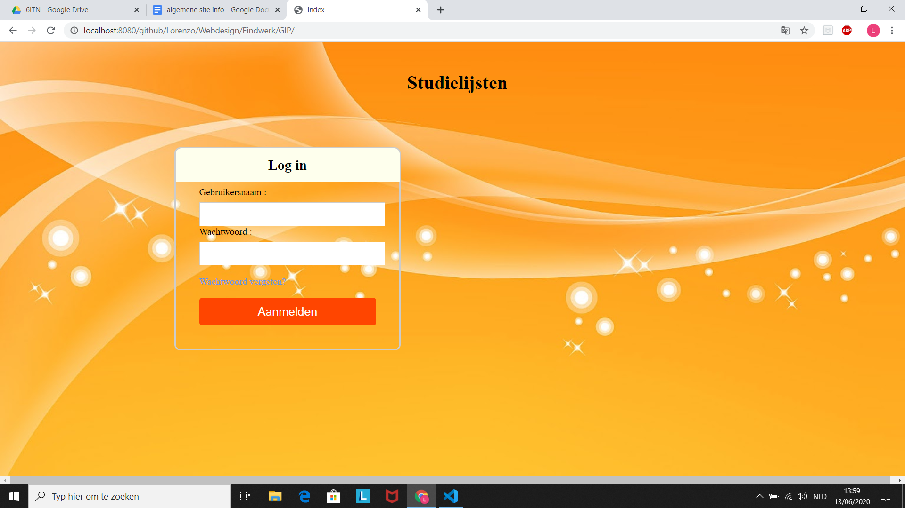
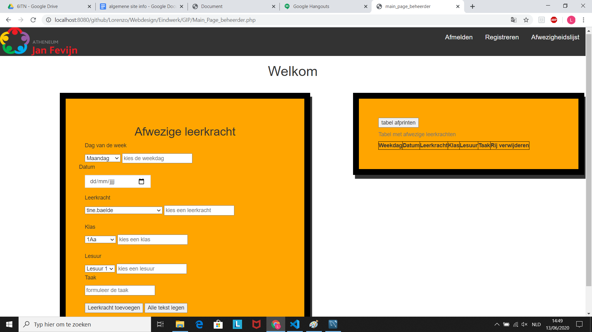
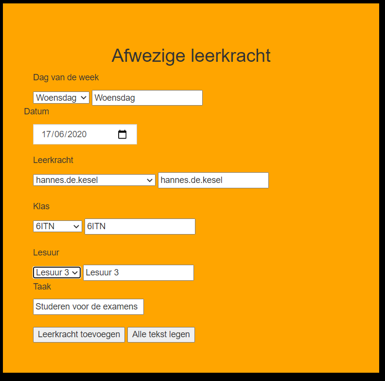
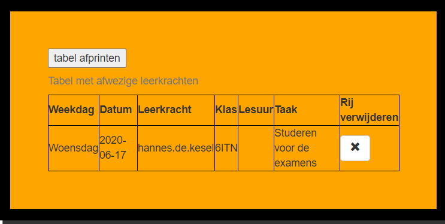
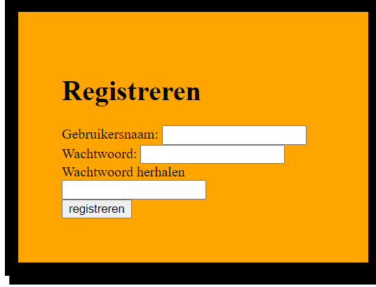

1. Log eerst in met de juiste gegevens
2. Wanneer je juist bent ingelogd zal je dit scherm hieronder te zien krijgen
3. Om een Afwezige leerkracht in te geven vul je gewoon de gegevens in (zie voorbeeld hieronder)
4. Wanneer je op de knop Leerkrachten toevoegen klikt komt dit in de tabel ernaast
5. Wanneer je alle leerkrachten hebt ingegeven druk je op tabel afprinten en kun je de tabel ophangen in de gangen
Er is ook de optie om een nieuw persoon toe te voegen die op de website kan. Dit doe je door naar het tabblad registreren te gaan.
Dan krijg je dit scherm te zien
